---
title: "test"
format: html
editor: visual
date: today
---11 Quarto
According to the Quarto Website, Quarto is an open-source scientific and technical publishing system, and it is already available on your machines because you installed it together with RStudio.
Quarto is part of a set of tools designed to enhance the reproducibility of your work. Other tools and platforms such as GitHub, Jupyter, Docker, ArXiv, and bioRxiv can facilitate reproducibility in various ways. In this module, we won’t explore the paradigm of reproducible research in detail. Instead, our focus will be on how to use Quarto to make your analyses and reports more appealing, interactive, and efficient.
In this lesson, we will weave together code and text in professionally rendered Quarto documents and use GitHub to safely store, share, and administer our results.
11.1 Set up your work environment
Before creating your first Quarto document, we need to set up the GitHub environment. Originally founded as a platform for software developers, GitHub’s architecture is designed to manage changes made during software development. This architecture is also beneficial for version control of documents or any information collection.
Version control is especially important when working in teams, as it helps synchronize efforts among project participants. However, GitHub is also a reliable and open online platform for individual work, providing change tracking, documentation, and sharing features.
To set up your personal GitHub environment, follow these steps:
- Review the Hello-World Section in GitHub’s Quickstart Documentation. Initially, reading it is sufficient—no need to complete the tutorial yet.
- Create a GitHub account.
- Download and install Git. Git is a distributed VCS (version control system) that mirrors the codebase and its full history on every computer. GitHub is a web-based interface that integrates seamlessly with Git. For a clear explanation of Git’s core concepts, watch this video.
- In RStudio (under Tools > Global Options > Git / SVN), check “enable version control” and set the path to git.exe (e.g., C:/Program Files/Git/bin/git.exe). Restart RStudio afterward.
- Create a repository on GitHub. In the tutorial, skip the section ‘Commit your first changes’.
- By default, your repository will have one branch named
main. Create an additional branch calleddevoff themain. Follow the instructions in the Hello-World Tutorial for guidance.
Tip
For technical issues, please consult the discussion forum.
11.2 Create a local clone
To work on your repository locally, you will need to create a local clone of your online GitHub repository. Here’s how:
In RStudio, go to (File > New Project > Version Control > Git).
Enter the URL of your online repository (find this URL in your GitHub repository) and select a local directory for the clone. Then click “Create Project”:
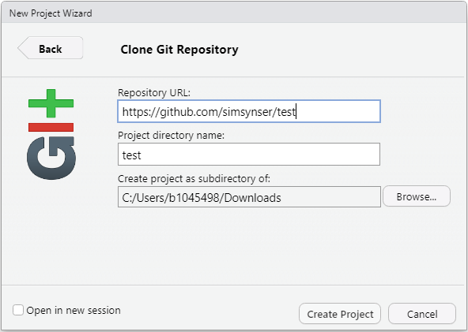
Once you have cloned the online repository, the file contents of the repository as well as a new tab called “Git” appears in RStudio:
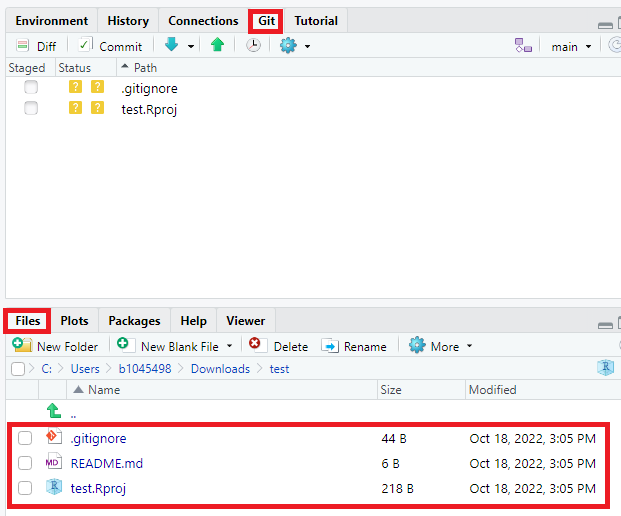
By default, the repository includes three files:
-
.gitignore: Specifies intentionally untracked files to ignore. -
RStudio Project File (
.Rproj): Contains metadata for the RStudio project. -
ReadMe File (
.md): A markdown file with information about the repository.
The gitignore and .Rproj files are created during project initialization and are not yet in the online repository. Modifications appear in the “Git” tab:
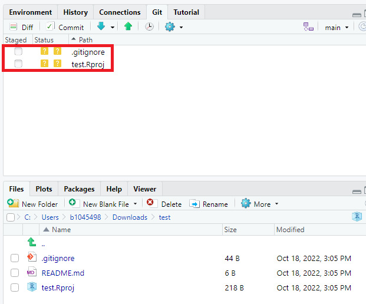
Before making further changes, switch to the dev branch:
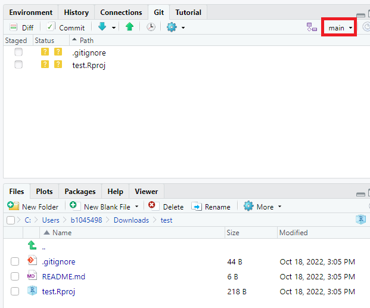
At this point, the dev branch mirrors the main branch.
Tip
It is highly recommended to work in progress on a separate developer branch, like dev, and keep the main branch for stable versions. You can later merge changes from dev to main through a pull request (see Opening a Pull Request).
11.3 Creating Your First Quarto Document
Now that the environment is set up, let’s create our first Quarto document.
In RStudio: Navigate to (File > New File > Quarto Document). Enter a title for your document, accept the default settings, click “OK”, and save the file. You’ll receive a sample Quarto file with the extension .qmd.
By default, Quarto is in Visual Editing mode, which provides a WYSIWYM-style editing interface for Quarto documents. Switch to the Source Editor:
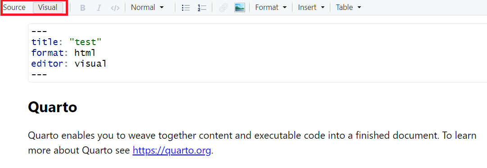
While the Visual Editor interface is more intuitive, the source editor promotes a deeper understanding of underlying structures. Moreover, errors can be spotted and debugged more easily in Source Editor mode.
Quarto documents include three core components. Metadata, text and code:
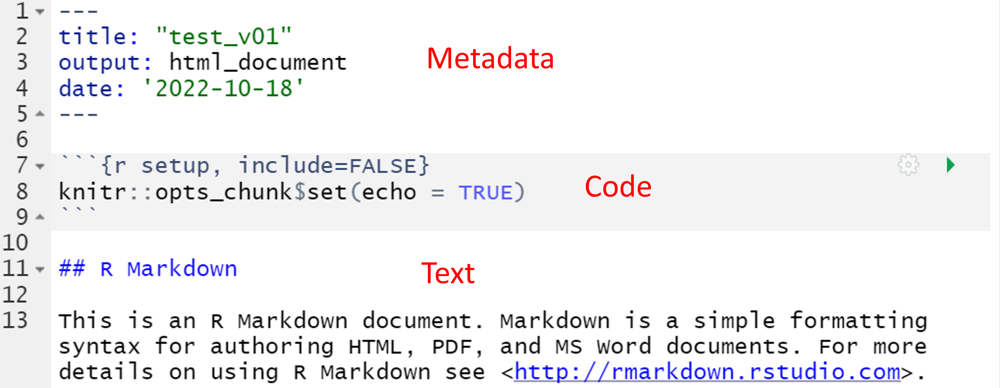
The metadata, written in YAML syntax, defines document properties like title, output format, and creation date.
Exercise
Explore YAML syntax and document properties here.
Insert a suitable parameter in the metadata section of your Quarto document to include today’s date in the document header. Push the button “Render” in RStudio to generate the HTML output.
Solution
Similarly, you may change the output format under YAML parameter format. Quarto supports output formats like HTML, PDF, MS Word, ePub, Jupyter and many more (see all Quarto Formats).
Tip
Alternatively, YAML-configurations may be specified on a project level (separate file named _quarto.yml) or on a code chunk level (see YAML Locations).
In your Quarto document you will find R inline code blocks that start and end with three backticks. The parameter r in curly brackets identifies the code as R code. Other languages in Quarto are Python, Julia and Observable JS.
To customize outputs of your code, you may specify execution options. For instance, the second code block in your Quarto document is not displayed in the HTML output due to execution option #| echo: false. Moreover, by setting execution option #| eval: false, code can be displayed in the HTML without being executed. Other code execution options can be found here.
Exercise
Insert the following code into your Quarto document, add some textual interpretation of results and render as HTML:
library(ggplot2)
ggplot(data=cars, aes(x=speed, y=dist)) +
geom_point() +
geom_smooth()This simple exercise illustrates the fundamental benefit of Quarto. It facilitates weaving together narrative text and code into data reports and documents that can be exported in various formats.
11.4 Synchronizing with GitHub
Regular synchronization of your local changes with the online repository is a key practice in version control. Start by pulling any updates from the repository.
In the RStudio Git tab, click the “Pull” button (see Figure 11.7). A notification should indicate whether any new changes are available (e.g., Already up to date).
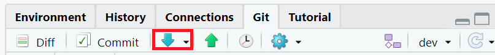
Even if you’re working on your own, it’s a good idea to routinely start the sync process with a “Pull”.
Next, commit your changes. Think of committing as taking a snapshot of your progress, accompanied by a descriptive message.
First, save all documents in RStudio. Then, hit the “Commit” button in the Git tab. The commit window will display a list of modified files. Green highlights indicate new content; red highlights show deleted content.
Check the boxes next to each file to include them in the commit. Alternatively, run git add -A in the terminal to add all files at once (see this list of popular Git commands). After selecting files, enter a meaningful commit message and click “Commit”.
See Figure 11.8.
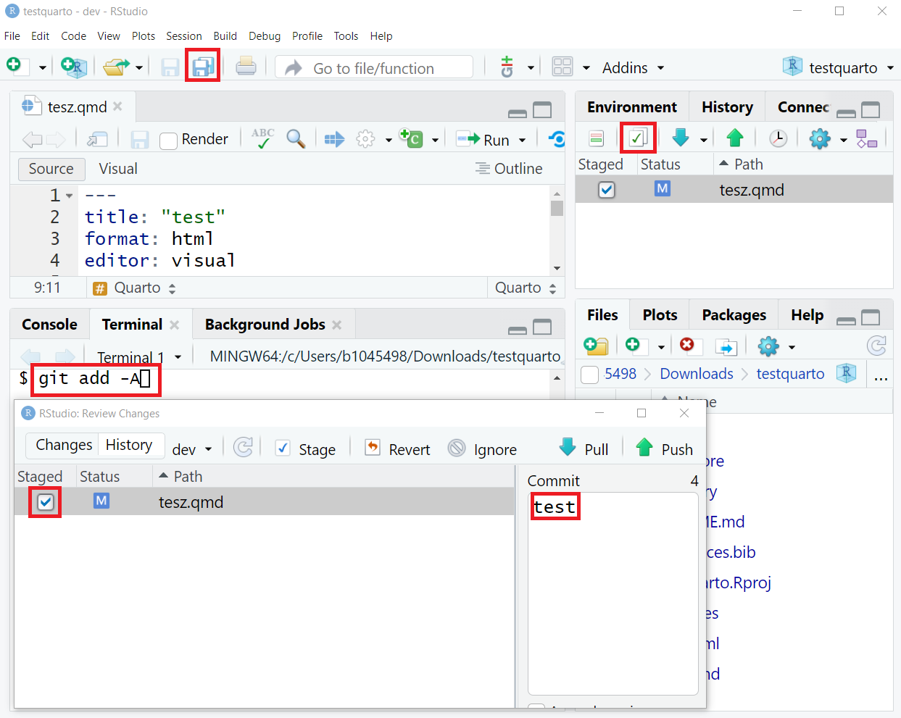
Finally, push your committed changes to the online repository:
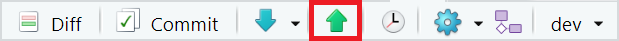
Your online repository on GitHub should now be updated (switch to dev branch in your repository) (see Figure 11.10).
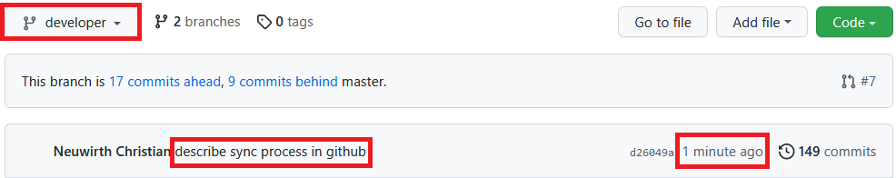
In our example the dev branch is two commits ahead of the main branch. You may open a pull request to merge changes from dev to main branch.
11.5 Basic Markdown Syntax
In Quarto text is formatted by means of the Markdown syntax. Commonly used markers are…
Bold: Double asterisks **Text** turn text bold.
Italicize: Single asterisks *Text* create italicized text.
Headings: Use hash signs # for headings. The number of hashes denotes the heading level:
# Heading level 1
## Heading level 2
### Heading level 3Tables are created by using the symbols | and -. Recall the numeric operators table from the first lesson. Figure 11.11 shows the Markdown syntax used for that table:
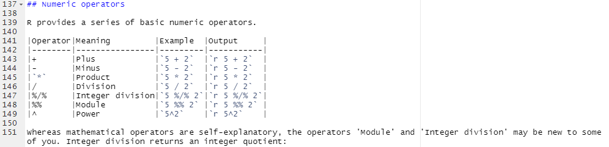
To create an ordered list, use numbers followed by a period. The first item should start with the number 1:
Code - Ordered List:
1. item 1
4. item 2
3. Item 3
+ Item 3a
+ Item 3bWill result in:
- Item 1
- Item 2
- Item 3
- Item 3a
- Item 3b
To create an unordered list, use *, -, or +:
Code - Unordered List:
* item 1
* item 2
* Item 3.1
- Item 3.2Which will result in:
- Item 1
- Item 2
- Item 2a
- Item 2b
Hyperlinks are created with the format [Text](URL), for example, [GitHub](https://github.com/){target="_blank"} becomes GitHub. The target="_blank" parameter opens the link in a new tab, which is a good practice when linking to external websites.
Blockquotes are indicated by > and can be nested:
>"Everything is related to everything else, but near things are more related than distant things".
>
>>The phenomenon external to an area of interest affects what goes on inside.Will result in:
The first law of geography is: “Everything is related to everything else, but near things are more related than distant things”
The phenomenon external to an area of interest affects what goes on inside.
Meanwhile, you know several characters that have a special meaning in Markdown syntax (like # or >). If you want these characters verbatim, you have to escape them. The way to escape a special character is to add a backslash before. For instance, \# will not translate into a heading, but will return #.
RMarkdown supports a large number of mathematical notations using dollar signs $:
Math. notation example 1:
$x = y$
Result looks like:
x = y
Math. notation example 2:
$\frac{\partial f}{\partial x}$
Result looks like:
\frac{\partial f}{\partial x}
Tip
See “Mathematics in R Markdown” as well as Markdown Basics for more.
11.5.1 References in Quarto
Quarto facilitates an efficient method for inserting citations and building a bibliography. References are organized in a .bib file.
To begin, create a new document in a text editor, such as Windows Editor, and save it with a .bib extension (e.g., references.bib) in your RStudio project folder.
- Enable BibTeX Export: Modify your settings in Google Scholar to enable BibTeX export (see Figure 11.12).
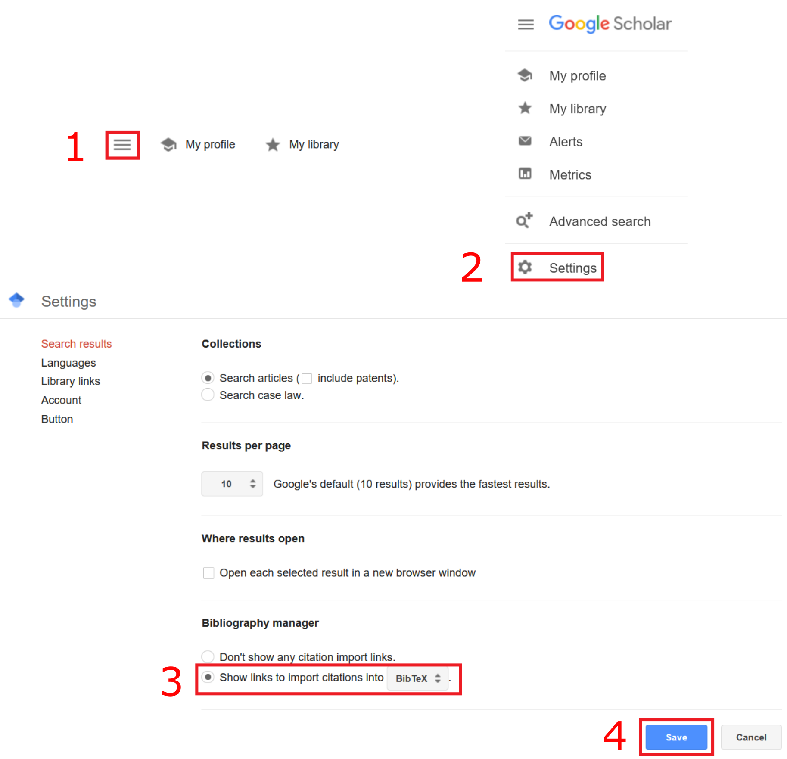
Browser versions may vary. For assistance, refer to the discussion forum if needed.
- Export BibTeX Entries: After enabling BibTeX export, a new link “Import into BibTeX” will appear in Google Scholar (see Figure 11.13).
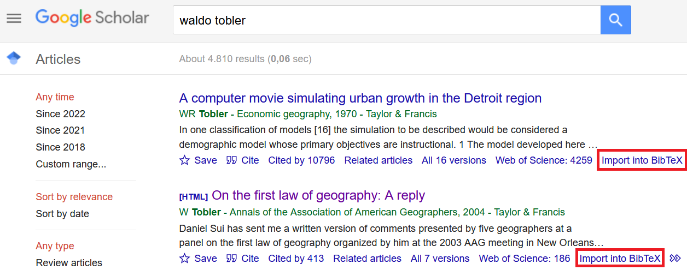
Click the link and copy the BibTeX code into your .bib file.
-
Integrate References in the Quarto document: Specify the location of your
.bibfile in the YAML metadata of your Quarto document (bibliography: <.bib file>). Insert@followed by the BibTeX key to add citations (see Figure 11.14).
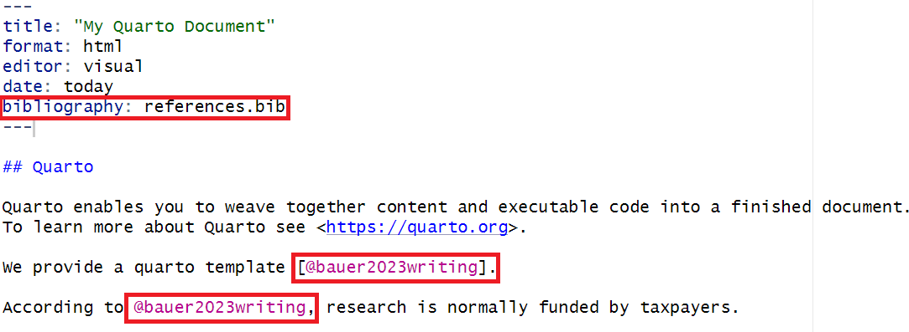
- Compile the Document: Render the Quarto document as HTML. Quarto processes both indirect (without square brackets) and direct citations (with square brackets) and includes a bibliography (see Figure 11.15).
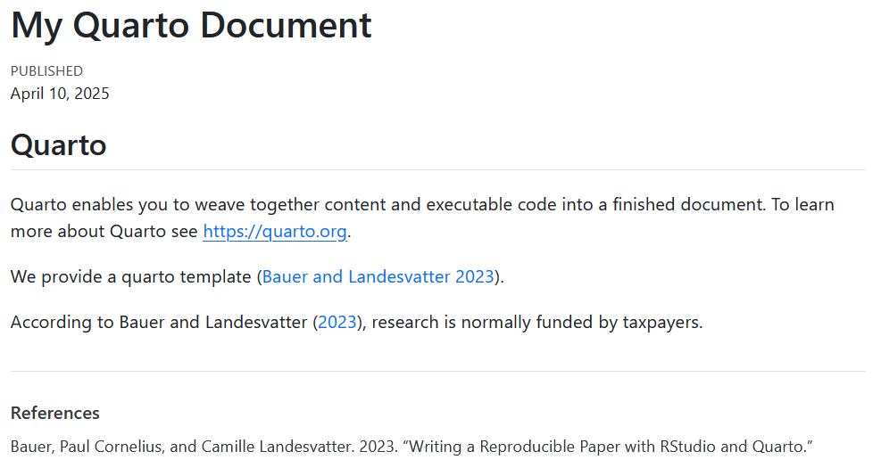
For a practical demonstration, download and explore this Quarto reference example. Unzip the folder and open the .Rproj file in RStudio.
11.6 Speed up your workflows
Quarto significantly enhances the efficiency of repetitive workflows. For instance, consider a scenario where a client requires daily updates on specific spatial economic indicators. Instead of manually generating a new report each day, Quarto can automate this process, creating data reports with charts that update automatically upon compilation. This approach can save substantial time and effort.
Real-time data retrieval is possible through Alpha Vantage, which provides financial market data via the Alpha Vantage Rest API. The R library alphavantager facilitates API access within R. The use of alphavantager enables the extraction of various types of financial data, including real-time stock prices, FX rates, and technical indicators, directly into R. This allows for efficient data processing and visualization, making it a good tool for finance-related reports and analyses in Quarto.
Exercise
Explore a practical example by downloading this draft finance data report. Unzip the folder and open the .Rproj file in RStudio.
The project includes:
- A
.bibfile with a BibTeX reference. - A
.csvfile in the data folder, listing over 400 country names, national currencies, and currency codes. - A
.qmdfile with inline R code that renders real-time currency exchange rates in a map.
Review the .qmd file thoroughly before compiling an HTML output. Note that it includes an interactive Leaflet map, making HTML the only supported output format.
Try enhancing the report with an additional spatial indicator, such as a map displaying exchange rates from national currencies to the Euro.
11.7 Self-study
The vast functionalities of Quarto extend beyond the scope of a single lesson. To fully exploit its capabilities, refer to the comprehensive Quarto Guide.
This guide covers additional topics such as the integration of figures or cross references, computations in various languages such as R, Julia and Observable and formats such as quarto projects, presentations, dashboards, websites, books or manuscripts.
Tip
To find inspiration for your own projects you may consult the Quarto Gallery that provides a variety of Quarto best practice examples.